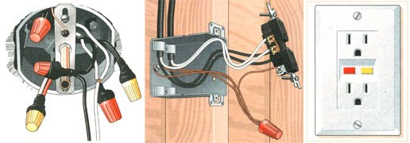

(ILLUSTRATIONS: THOMAS MOORE)
Left: A typical ceiling light box. Many wires are joined here, but for replacement, focus on the wires connected to the light. Middle: a common wiring scenario. Notice how the double terminals on the receptacle function as a splice between the incoming and outgoing hot (black) and neutral (white) wires. With only one ground terminal (top), the receptacle needs a short pigtail ground wire, which is wirenutted to the ground wires of the two cables, plus another pigtail attached to the metal box. On a plastic box, the second pigtail is eliminated. Right: A ground fault circuit interpreter (GFCI), with TEST and RESET buttons.